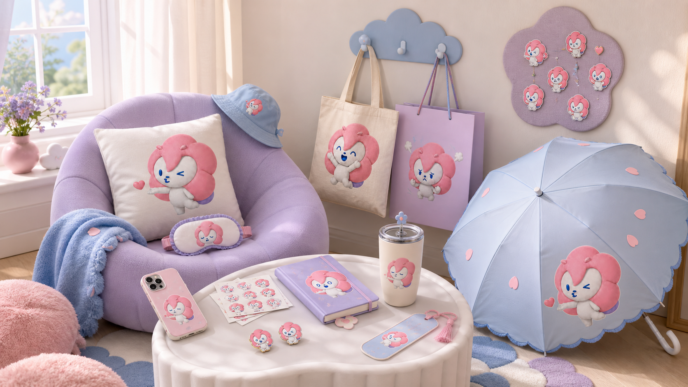
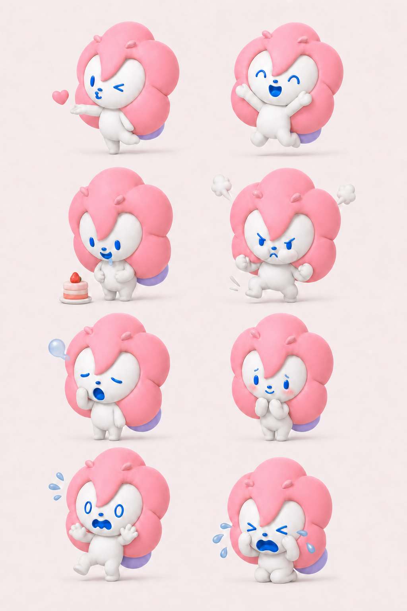
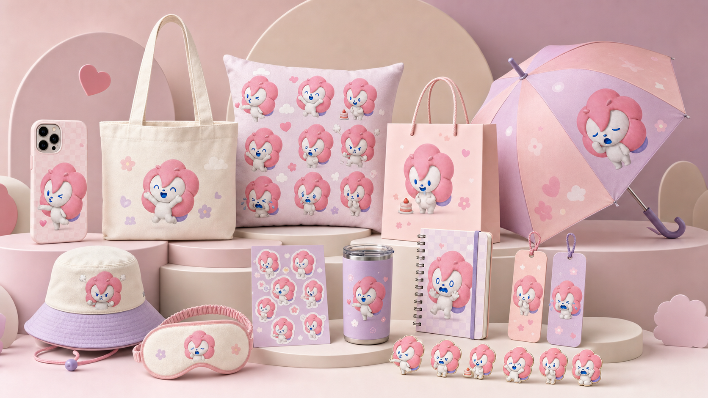
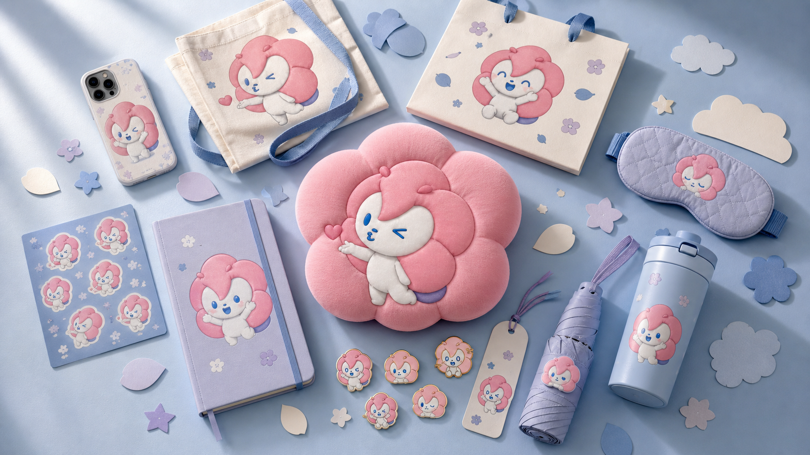
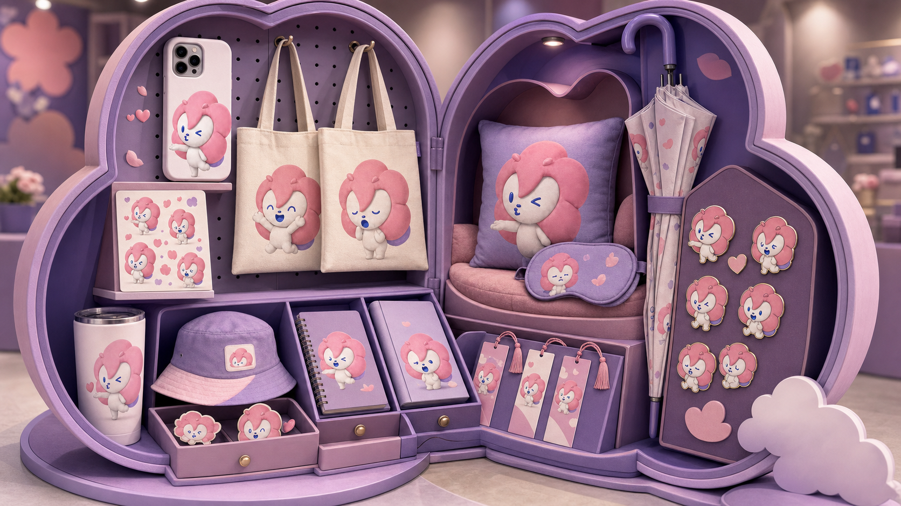
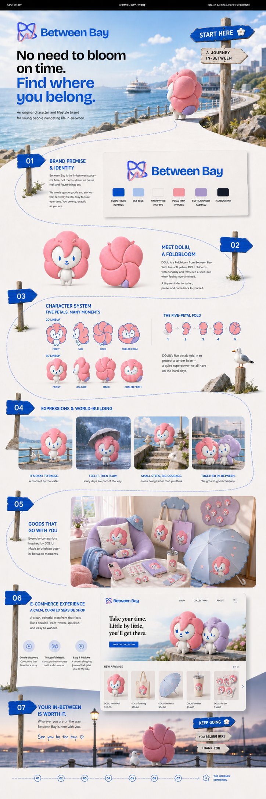

No need to bloom on time
A gentle lifestyle proposition for people navigating pauses, small changes and uncertain moments.
Doliu · IP Design
Between Bay is the in-between space—not here, not there—where we pause, feel and figure things out. Doliu carries that gentle world across character design, lifestyle goods and a calm digital storefront.

The visual identity balances a clear destination signal with a soft emotional world. The logo, palette, typography, route line, signposts and five-petal form work as one repeatable system before Doliu enters the scene.
Core palette
Typography
Graphic language
The final direction combines a cobalt-blue destination language with soft petal pink, sky blue and lavender. Doliu is not presented as a decorative mascot, but as the emotional guide through the brand world.
A gentle lifestyle proposition for people navigating pauses, small changes and uncertain moments.
A five-petal Foldbloom whose softness, curled form and expressive blue features embody the brand promise.
The visual system scales from story scenes to stationery, accessories, gifting and a calm coastal storefront.
Collections that feel like a story, not a sales wall.
Objects that celebrate craft, character and small pauses.
A smooth journey that gives people room to breathe.
The final 2D and 3D masters align front, side, back and curled forms. Eight expressions extend Doliu into social storytelling while retaining the same proportions, palette and material language.


The final merchandise direction tests Between Bay across warm studio, blue flat-lay, lifestyle room and pop-up gift-box settings. Together they demonstrate product range, visual consistency and campaign adaptability.



This presentation consolidates the final brand premise, identity, Doliu character system, world-building, merchandise and e-commerce experience into one recruiter-readable narrative.

Brand premise, identity, character consistency, visual art direction, merchandise storytelling and the ability to connect an original IP with e-commerce needs.
The case directly supports Brand & Visual Designer, E-commerce Graphic Designer and AI-assisted commercial visual roles.